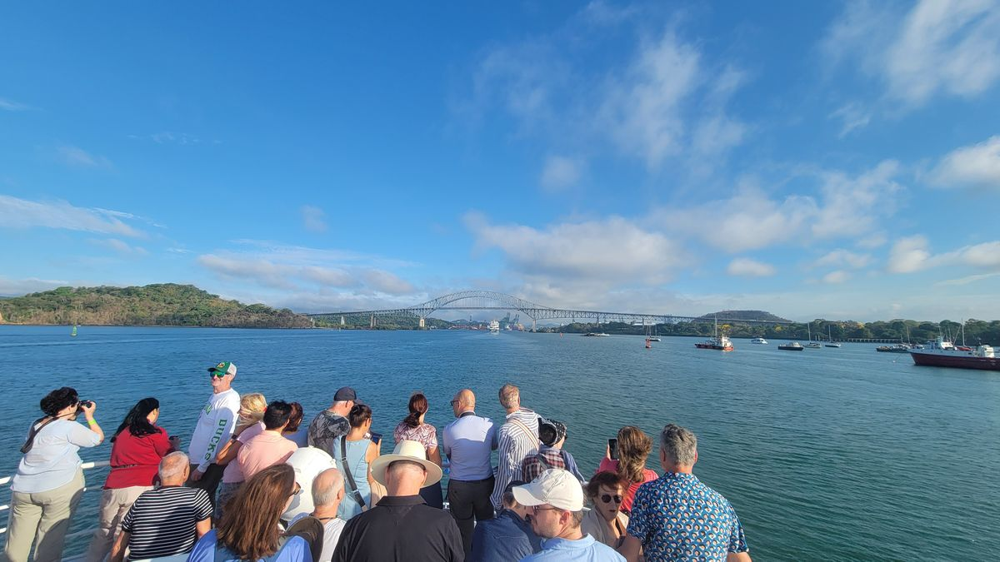
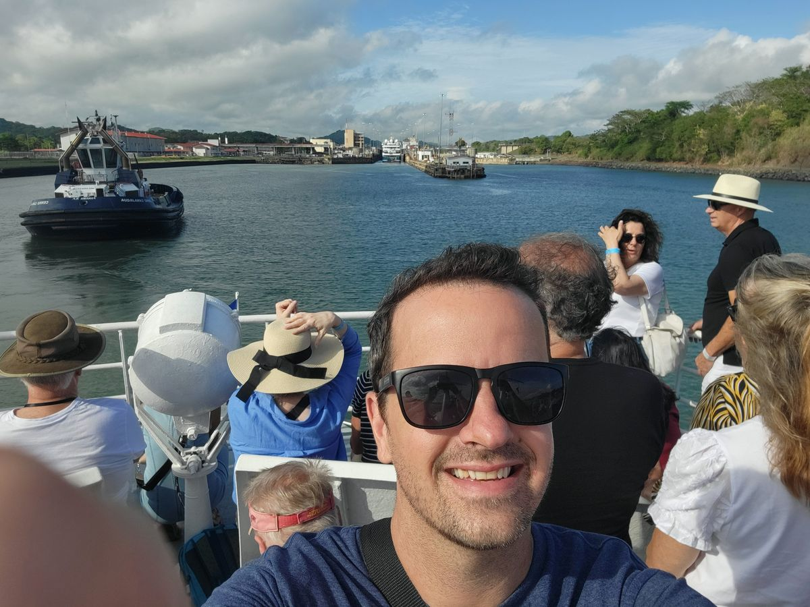
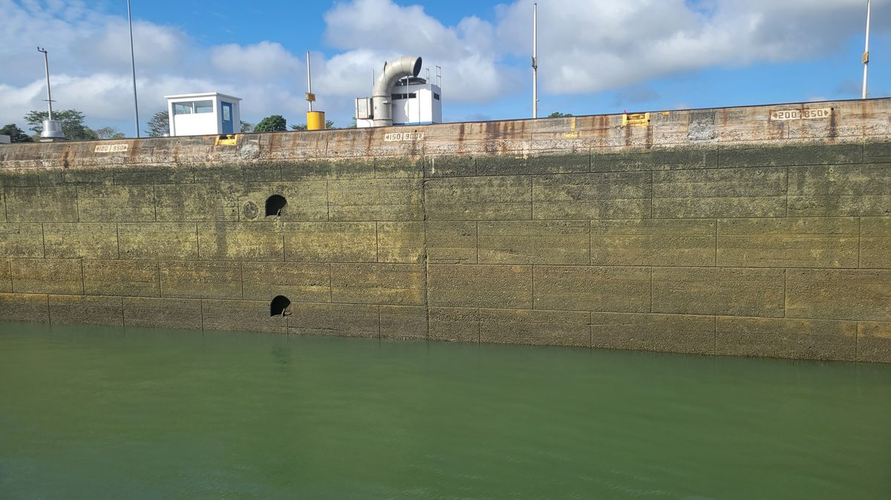
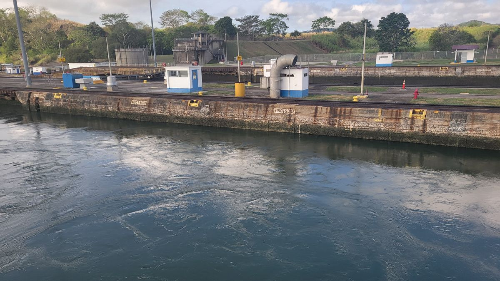
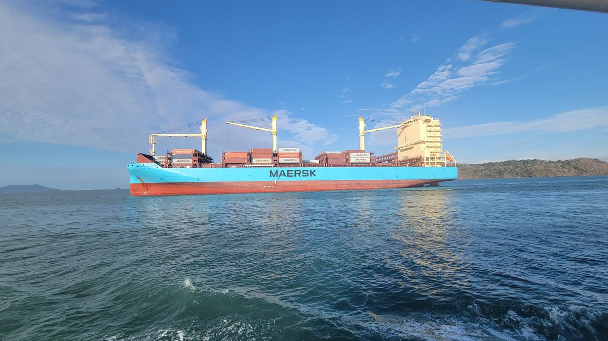
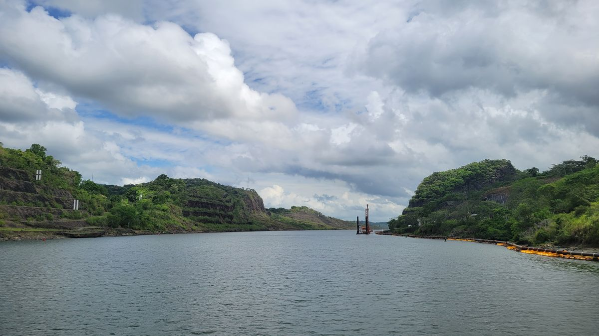
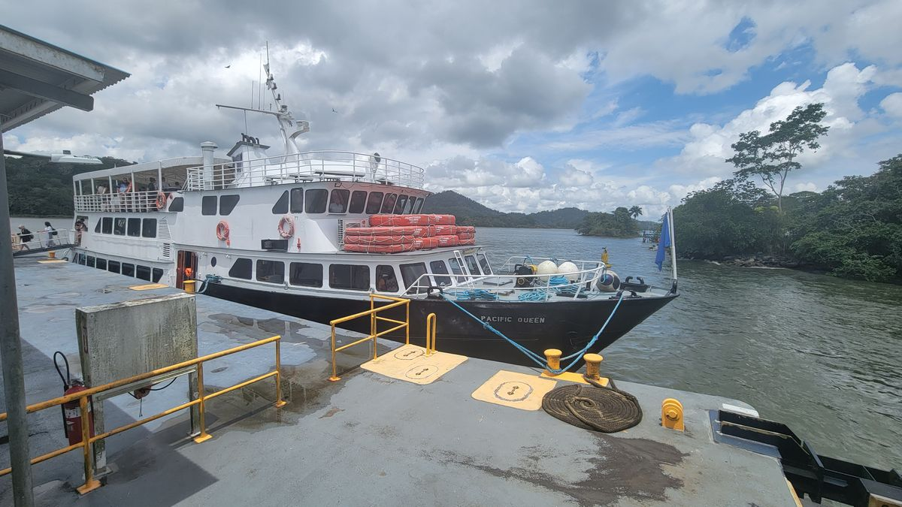
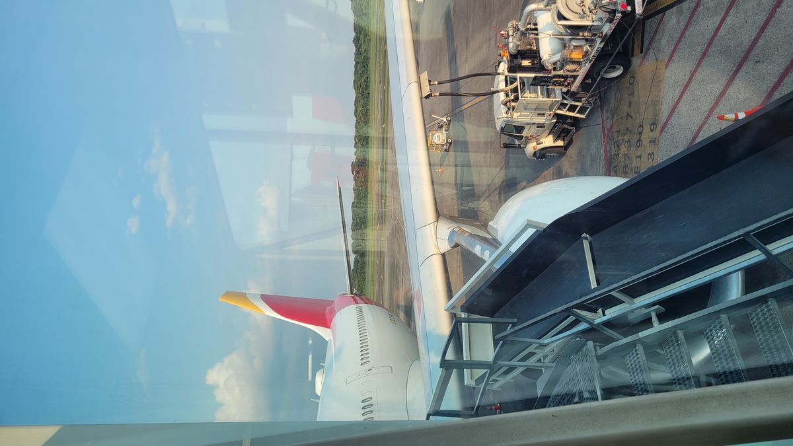
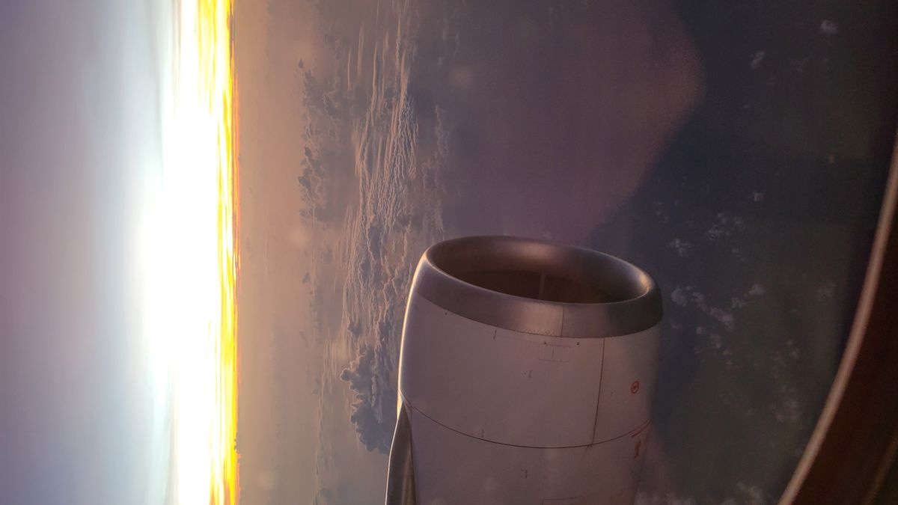

Panama Canal
A trip to Panama cannot be done without visiting the Panama Canal. The Canal was completed in 1914 and was a monumental engineering feat for its time. It connects the Pacific Ocean to the Atlantic Ocean cutting through the Panama isthmus, significantly reducing maritime travel time. Originally started by the French in the 1880’s, it was abandoned due to significant engineering challenges and high mortality rates. The Americans resumed construction in 1904 and successfully overcame these challenges. Today the Canal is owned by the Panama Canal Authority a Panamanian organization.
There are a few different ways a tourist can experience the Panama Canal. The easiest and cheapest way is to visit the Miraflores Locks visitor center where you can view ships coming or going (depending on the time of day you visit, coming in the early morning, going in the afternoon and evening) and get a curated over view of history of the canal from the attached museum. But this wasn’t going to cut it for me. Out of all the things I had planned to see and do while in Central America, the Panama Canal was high on the list, maybe even #1. So, an all-inclusive, half day cruise it was. You get to transit the Pacific side locks (Miraflores and Pedro Miguel) while being feed breakfast and lunch, unlimited drinks and snacks and a knowledgeable guide narrates the entire journey. A little more than I would usually spend for an experience, but well worth it, to get the whole canal experience.
A Sprinter Van picked me up early on a Saturday morning from my Air BNB and took me to a terminal located just outside Panama City, close to the entrance of the canal, where our boat was waiting for us. About a hundred or so other tourist would join me for today’s partial transit of the canal, and we all boarded and departed promptly on schedule. Transit times for the canal are tightly regulated and we cannot take our chances of missing our allocated time. Because our transit was northbound (from the Atlantic to pacific) the latest you can enter the Canal is 8am because the locks are one way. You cannot hold up everyone else going the opposite direction because a needy tourist wasn’t ready.
After a transit time of just a few minutes the Bridge of the Americas comes into view. The bridge was built in 1962 and, at the time was the only piece of infrastructure to connect North and South America since the Canal cut the continent over half a century earlier. Our canal pilot arrives and maneuvers us behind a much larger cruise ship that we will be sharing the lock with this morning and we make our way past the port of Panama City and into the first lock. The massive steel doors close behind us and quickly the lock fills with water and these giant ships begin their continental climb with relative ease.





A short 10 minutes or so and 26 million gallons of water later. We’ve reached our final altitude for this lock and the next gate opens. The 2 behemoths slowly lurching their way forward on onto the next lock. We repeat this process 2 more times until we reach Gatun Lake in the middle of the canal. Usually, a ship would continue across the lake and repeat the journey in reverse on the Atlantic side. Our journey today stops here though. A full transit is offered to tourist once a month, unfortunately the dates did not align with my schedule, or you can book a vacation on one of the many cruise ships that makes the transit, amongst other destinations.


After the cruise of the canal, I took a few days break in my Airbnb and relaxed and reflected on the few previous months of travel and all that I had seen and done. But sooner than later, it came time to pack up again. This time onto different adventures...

